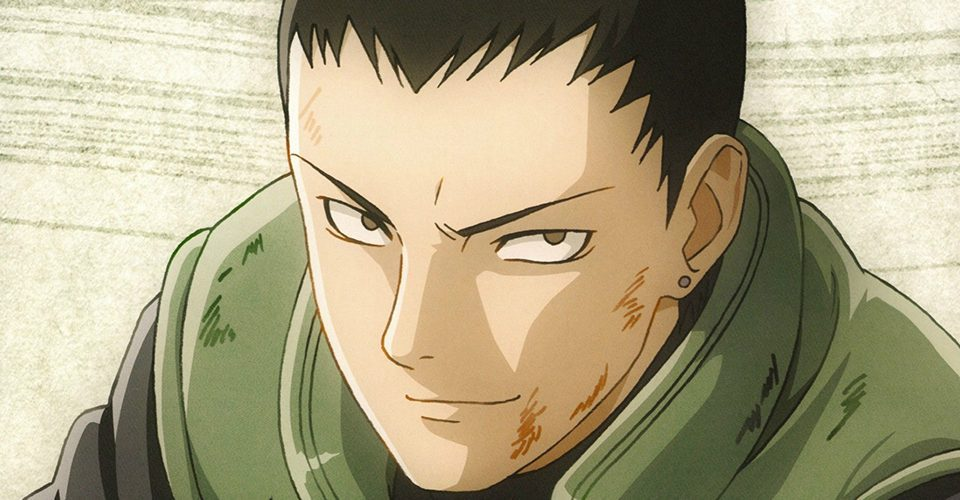

FSC
French Server Community
Qui est Ryota Hoshigaki
Ryota est un jeune enfant du clan Hoshigaki, né dans le village caché de la brume il est le fils de Hanzo Hoshigaki, malheureusement pour Ryota il n'a jamais pu connaître son père, Ryota aura alors à coeur de fouiller les traces du passés de son père pour en apprendre plus sur lui et devenir un shinobi le dépassant. Ryota est un enfant curieux et téméraire, la vie ne lui ayant pas fait de cadeau, il pourra se montrer aussi cruel qu'aimant et loyal envers ceux qui lui sont proches, sa loyauté envers le clan sera sans faille. Ne cotoyant pas beaucoup d'autres personnes du village son salut se trouvera dans les membres de son clan ainsi que dans sa quête de la vérité.
Intellectuel
stratégique
Curieux
touche à tout
Sens de l'Honneur
infaillible
Calculateur
de naissance

Maniaque
Routine parfaite
Solitaire
Requin Blanc
Dès sa naissance, Ryota pleura comme tout les autres enfants, il n'aura de cesse de se questionner ce qu'il le change des autres et de se questionner sur plein d'autres aspects de la vie. Il comprit alors très vite que sa vie n'allait pas être un long fleuve tranquille mais un véritable océan déchaîné, il se fixera de devenir un véritable requin blanc afin de traverser cet océan. Il se fixa l'objectif de survivre coute que coute et d'aller chercher réponses à ses questions, autrement dit l'enfance de Ryota fût une enfance marqué par de nombreuses interrogations mais sans possibilité de réponse. Il ne s'approchera jamais trop des autres élèves à l'académie, il ne prêta sa confiance qu'aux gens de son clan, il ne se laisse pas marcher dessus quitte à se montrer cruel, il tient son clan en très haute estime et ne supportera pas la moindre insulte envers ce dernier.
"La poiscaille essayant de bloquer le requin blanc finira toujours dévoré."
-Ryota Hoshigaki

Ryota n'étant toujours pas sortie de l'académie continuera ses études, détestant les efforts vains ainsi que les sale sans clan sans honneur il se contentera de mener une enfance paisible seul. Il saura alors apprécier ces petits moments calme que la vie lui avait offert, qui était réellement son père, qu'avait t-il accompli ? Qui était sa mère ? Bien que ses questions le hantait il savait qu'il serait inutile de fouiner pour l'instant. Il prendra alors son mal en patience et en profitera pour aiguiser ses compétences ainsi que son savoir, il aimait énormement nager et se détendre dans l'eau, il se sentait isoler et loin de tout, il avait l'impression d'être l'enfant le plus libre au monde. Il appréciait profiter des moments ou il nageait afin de récolter de quoi manger pour lui, lui permettant de faire griller des poissons à la sortie. Désormais Ryota avait enfin 11 ans et se préparait à sortir de l'académie, il était prêt à affronter la tempête qui l'attendait et à se propulser à l'aide de celle-ci, refusant de finir englouti par cette dernière afin de ne pas poser de problème à son clan, notemment à Kitaro Hoshigaki.

"Même un requin sait apprécier les moments de calme."
-Ryota Hoshigaki

On y était enfin Ryota avait désormais presque fini sa dernière année à l'académie, désormais agé de 12 ans sa préparation physique devenait de plus en plus difficile, il avait notemment beaucoup de mal à suivre les entraînements avec Kitaro, bien qu'il ne se plaignait jamais, Kitaro ne lui faisait pas de cadeau et ryota ne pouvait en attendre moins de sa part. Ryota avait alors pris une certaine habitude dans son entraînement, après avoir affronté un adversaire, ryota avait pris l'habtiude de s'imaginer des adversaires contre qui il combattait dans son esprit, que ça soit une personne avec qui il n'a croisé le fer qu'une seule fois ou que ça soit même lui même. Le jeune Hoshigaki c'était déjà fait beaucoup d'ennemi, non pas par le fait qu'il manquait de respects aux autres ou qui se ce soit mais par le pur fait de les ignorer, les autres ne cessaient de penser que Ryota n'était qu'un enfant arrogant et prétentieux, alors qu'en réalité ce dernier ne leur prêtait tout simplement pas attention.

"Le requin ne se mélange pas aux poissons d'eau douce."
-Ryota Hoshigaki
Objectifs cat 1 :
Le premier objectif du jeune Hoshigaki sera de non pas devenir un simple shinobi digne de ce nom mais de devenir un Hoshigaki digne de ce nom, il priorisera toujours les intêrets de son clan, il souhaite enquêter sur ses origines, sur son père ainsi que ses exploits passés, il souhaite suivre la trace de son père et ne pas avoir à rougir lorsqu'il le rejoindra. Ryota tiendra alors un carnet d'enqûete "ASR" (affaire spéciale Ryota), il n'hésitera pas à mener plusieurs intérrogatoires et ce même dans le dos de son pays, le menant ainsi dans une longue quête de vérité et de recherche de soi même. Ryota finira alors par s'atteler à enquêter sur plein d'affaire notemment le passé de son clan tout entier ainsi que les clans en mauvais termes avec les hoshigaki, à therme il créera une escouade basé sur la traque et la recherche d'informations dans le plus grand secret.

Objectifs cat 2 :
Le jeune Hoshigaki porte un énorme intêret à la section stratégique de son village, il envisage alors de devenir une tête de celle-ci mais pas seulement, il envisage d'utiliser tous les vices possible afin de devenir le chef de celle-ci. Une fois à la tête de la section stratégique il mettra un point d'honneur à prendre en importance afin de placer son clan à la tête du village, son objectif ainsi étant d'avoir un hoshigaki à la tête de chaque section, prendre les rênes du village et placer un Hoshigaki en tant que Mizukage. La cupidité de Ryota sans limite le ménera à vouloir un haut commandemant constitué exclusivement des ninjas de son propre clan. Il souhaitera aussi devenir connu par sa maitrise du Suiton, il mettra un point d'honneur à tenir un journal de ses techniques Suiton qu'il offrira à un descendant, journal au cours duquel il racontera ses affrontements avec les autres maitre suiton ainsi que son entraînement afin d'en devenir un.
Objectifs cat 3 :
D'autres objectifs arriveront plus tard dans la vie de Ryota, il envisagera plus tard de créer une escouade Sous-Marine exclusivement constitué d'hoshigaki ainsi que d'hozuki qu'il aura payé, pour se faire il donnera de lui une façade amical envers Kusa mais n'en pensera rien, le but de cet escouade sera d'explorer des ruines sous marine afin de retrouver des vestiges du passé. Il aura aussi à coeur de découvrir des créatures marines afin de les étudier, de les comprendre et peut-être même de passer des contrats d'invocation avec ces dernières. L'un des objectifs de Ryota relévera de l'hypocrisie, malgrès l'air désagréable ainsi que la froideur qu'il dégage il aura à coeur de montrer une bonne façade de son clan et une façade forte afin d'éviter que son clan soit ostracisés. Il aura à coeur de récupérer les épées de la brûme afin de les disperser dans son clan, mais pas seulement il souhaitera aussi en faire part à des gens de confiance de son village, la plus importante pour lui sera celle de son père, il souhaitera pérpetuer son héritage aux futur générations.


Suiton

Kiminari
Hoshigaki
Le Suiton, art d'utiliser l'eau sera la nature de chakra principal de Ryota des son plus jeune âge, une nature de chakra propre à son clan symbolisant la force calme, il s'entraînera rigoureusement à manier cette nature.
Ryota maitrise le Kiminari aussi appelé "foudre noir" est un attribut génétique rare, c'est une forme dérivée et unique du raiton, elle dépasse la vitesse et la force brute du raiton, faisant de ce kekkei genkai une vraie force offensive.
Les membres du clan Hoshigaki sont généralement décrit par deux caractéristiques, leur apparence physique ainsi que leur maitrise du suiton qui est bien supérieur à la moyenne, Ryota bien qu'ayant une apparence de requin aura la peau blanche lui, il héritera tout naturellement de la force destructrice des hoshigaki.
-Taille :
1.56m
-Poids :
56kgs
-Corupulence :
Musculature assez développée
-Cheveux :
court et blanc
-Traits :
Traits prononcés hérités de son père
Qualités
- Sérieux
- Autodidacte
- loyal
- Têtu
- Créatif
- Curieux
Défauts
- têtu
- Vicieux
- Malhonnête
- Peu sociable
- Solitaire
je m'appelle Adam, j'ai 20 ans et je suis un immense fan de Naruto.
Il faut se dire que Naruto est un des animes qui a bercé mon enfance, j'ai commencé à regarder Naruto sur la 11 puis sur GameOne et enfin en streaming.
Lorsque j'ai découvert la FSC j'y ai vu une sorte d'alliance entre Mon anime préféré et mon type de jeu préféré, le RP, j'aimerais donc pousser l'expérience encore plus loin avec ce deuxième rp clan dans un village tout nouveau pour moi.
Je pense pouvoir apporter ma popre touche personnelle et ma propre DA au sein du clan, de mon personnage, de kiri et même inter-village.
je suis disponible tous les jours de 16h à 3H (sauf 1 semaine sur 4 ou je ne peux qu'a partir de 18h jusqu-à 01h00), on pourra donc me retrouver sur le serveur de façon actif tous les jours.
Etant un ancien joueur de RP, (commencé sur Habbo Hotel) et étant passé par du rp écrit, il n'y avait pas vraiment de "pvp" auparavant, je suis donc beaucoup plus un joueur Serious RP qui aime créer des scènes et les vivres à fond que de faire du pvp même si selon moi le pvp n'est pas dissociable du tout sur un narutorp.


Voici Habbo Hotel, les plus anciens reconnaîtront, j'ai commencé les jeux vidéos très tôt et j'ai commencé avec Habbo Hotel, Je ne pourrais pas vous dire combien de temps j'ai passé à faire du rolePlay dessus car je n'étais encore qu'un enfant mais je peux vous assurez que le rp sur ce jeu a bercé mon enfance un long moment.
C'est bien Minecraft, vous ne rêvez pas, je faisais du rp sur minecraft, sur ma ps4, lorsque j'étais adolescent des serveurs minecraft était crées pour rp sur ps4, c'était ma première vrai expérience avec un chat vocal. J'y ai accordé un peu plus de 700 heures.
Je pense que tout le monde reconnaît ce logo, c'est bel et bien celui de FiveM, pas besoin de vous expliquez ce qu'est fiveM, je pense que tout le monde connait assez bien le gtaRP. GTARP c'est très simple, j'y ai joué avec des potes et j'y rejouerais encore et encore dans le futur je pense (Insh'Allah gta6 bientôt). J'ai accordé à ce jeu un peu plus de 2000 heures de jeu.
Et nous voilà sur Gmod, Sur ce compte Steam la, il n'y a donc que mes heures de jeu sur FSC NarutoRp, à noté que j'ai pu tester 2 slots, un qui est niveau 220 avec le Kiminari et un autre ou j'ai pu testé le Shakuton qui est niveau 90 avant la v2, désormais je suis lvl 63 sur mon slot Kiminari, je regroupe plus de 1300H de jeu sur FSC NRP.
Mon premier personnage fut Setsushi Nadeko, il est très vite passé Chunin et a intégré la Chifu, dès qu'il était Genin, il décida de former un groupe de personnes intelligentes et fortes, pour les recrutements un sensei s'en occupait, dès lors un grand groupe de Ame vu le jour, "La brume écarlate".
C'était donc un groupe de 14 personnes qui se réunissait assez souvent au pays neutre pour discuter et surtout, l'objectif de ce groupe était de faire en sorte que les "faibles" soient écoutés à Ame, mais petit à petit l'objectif dériva et l'organisation était devenu un groupe de traque envers les traîtres d'Ame. Setsushi décida de rester Chunin afin de montrer qu'on pouvait être à la tête d'une organisation sans forcément "être fort".
Avec ce personnage je réussissais donc à créer mes propres scènes et à en faire profiter les autres, malheureusement Setsushi, chef de la brume écarlate succomba après être resté chunin 5 semaines (5 ans in game).
Voici mon deuxième personnage, Tetsuya Kando (Kakunin), un jeune nukenin originaire d'Amegakure. C'est un sociopathe manipulateur qui n'a pas hésité à torturer un camarade, empoisonner un orphelin, ou encore tuer une personne qui pensait être son ami. J'enquêtais sur Ichibi avec un groupe de 4 personnes, j'ai donc exploité cette trame afin de créer de nombreuses scènes pour moi-même et d'autres joueurs, notamment en enquêtant sur le pacte qu'avait fait Ame et sur les membres du culte. Je m'étais infiltré au sein des scientifiques de Suna. Je me suis aussi infiltré à Konoha à plusieurs reprises, me faisant passer pour un "commandant genin" ou encore un chunin. Des rapports étaient régulièrement faits à Shinda Nakara (membre du conseil d'Ame), même si les rapports ne dévoilaient pas tout car je manipulais celui-ci aussi.

Grade atteint : - Jonin de Konoha
- lié à de nombreuses trames
- Section : Militiaire
- Fils de Aitsujin Uchiha et petit fils de Satsujin Uchiha
- Rp autour des nukenins et déserteurs
- Membre de la division 0
Grade actuel : Chunin
Palmares : - Passage 1er Examen Chunin
- Membre intégrante de la branche scientifique (GAKU)
- Experience qui vire au drame (épidémie dans tout le village suite à un virus)
1ère scène à envergure à kusa (fête cannibale, 8 intoxications alimentaire + scène casino et prison)
- Personnage du rp: je m'explique Asahi saato est un enfant cannibale ayant mangé ses parents et recueillis par Kusa, le but du personnage était de donné le plus de rp possible à la sous faction de kusa qui vient d'émerger, j'estime avoir rempli mon rôle en incluant tout le monde, scènes avec tout le village, la scientifique, l'académie et la médical.
Pourquoi Moi?
Fort de mes différentes expériences RolePlay, j'ai pu à diverses reprises faire du Serious RP et surtout toujours m'investir au sein des divers rp que j'ai commencés, ayant toujours accepté le looseRP dés fois même un peu trop, je n'ai jamais refusé de jouer une scène ou quoi que ce soit, je créerais et jouerais tout ce qui est cohérent et permet de donner du jeu au plus de monde possible.
Dû au récents évenements sur le serveur, plus que jamais je pense qu'un coup de boost en rp permettrait de redonner un deuxième souffle, accompagné de bon joueurs rp tel que Mahdy et d'autres je pense qu'on sera capable de redonner ce seconde souffle, à kiri en tout cas, j'ai déjà l'habitude de jouer tout types de personnages, j'aimerais alors que vous m'accordiez votre confiance qui sera entre de bonne main.
Ci dessous je mettrais quelques exemples montrant à quel point j'ai pu être moteur dans différentes trames, ayant créer ma propre trame sur une soirée entière à Kusa (virus cannibale soirée du 12/12/2024). Il n'y aura pas de rec car la plupart des scènes à lourd impact durent facilement + de 3H. Désormais je vais mettre une vidéo ayant été faite par un ami sur la fin d'un de mes persos NRP mais sur la Solve cette fois ci ou j'avais joué le temps de la transition V1 à V2.
Discord : Tyro2
Fin de rapport,
Tyro.

Merci de m'avoir lu !